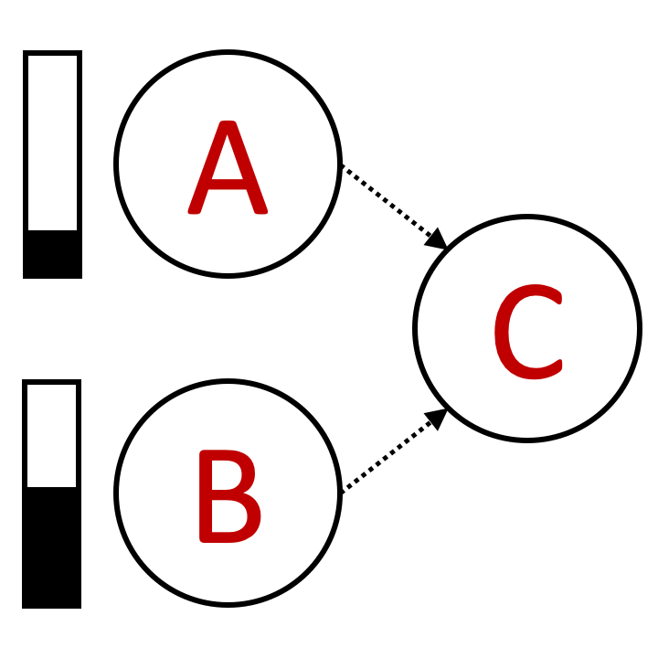

<!DOCTYPE html>
<html>
    <head>
        <title>My experiment</title>
        <script src="../../jspsych-6.1.0/jspsych.js"></script>
         <script src="../../jspsych-6.1.0/plugins/jspsych-html-keyboard-response.js"></script>
         <script src="../../jspsych-6.1.0/plugins/jspsych-instructions.js"></script>
         <script src="custom_plugins/jspsych-two-image-slider-response.js"></script>
         <script src="../../jspsych-6.1.0/plugins/jspsych-image-keyboard-response.js"></script>
        <link href="../../jspsych-6.1.0/css/jspsych.css" rel="stylesheet" type="text/css"></link>
    </head>
    <body></body>
    
     
  <script>
  
  function shuffle(o)
        {
        //Function to randomly shuffle an array:
        //takes an array and returns an array of same length, but shuffled
            for(var j, x, i = o.length; i; j = Math.floor(Math.random() * i), x = o[--i], o[i] = o[j], o[j] = x);
            return o;
        }


    /* create timeline */
    N_gs = 5
    N_qs = 3
    N_trials = N_gs * N_qs
    
    var queries0 = shuffle(['Slide1', 'Slide2', 'Slide3', 'Slide4', 'Slide5', 'Slide6','Slide7', 'Slide8']);
    var queries = [];
    for (var i = 0; i < N_trials; i++) {
          queries = queries.concat(queries0);
          i = queries.length - 1;
        }
    queries = shuffle(queries).slice(start = 0, end = N_trials);
        
    var graphs0 = shuffle(['Slide1', 'Slide2', 'Slide3']);
    var graphs = [];
    for (var i = 0; i < N_trials; i++) {
          graphs = graphs.concat(graphs0);
          i = graphs.length - 1;
        }
    graphs = shuffle(graphs).slice(start = 0, end = N_trials);

    var timeline = [];

    /* define welcome message trial */
    var welcome = {
      type: "html-keyboard-response",
      stimulus: "Welcome to the experiment. Press any key to begin."
    };
    timeline.push(welcome);

    /* define instructions trial */
    var intro = {
      type: "html-keyboard-response",
      stimulus: "<p> This study is part of a research project conducted by " +
                "Ishita Dasgupta, Harvard University.</p>"+
                "<p> We want to examine people's intuitions about causes and effects.</p>" +
                "<p> Please read the instructions carefully and try to perform as well as you can.</p>" +
              "<p> If you have any questions, please write an email to  idasgupta@physics.harvard.edu </p><br>"+
              "<p>Press any key to begin.</p>",
    };
    timeline.push(intro);
    
    var instructions = {
      type: "instructions",
      pages: [
        'Welcome to the experiment. Click next to begin.',
        'Here is a picture of what you will do: </img>',
        'Click Next to start the experiment (You will not be able to return to the instructions once you begin)'
    ],
    show_clickable_nav: true
    };
    
    
    timeline.push(instructions);


    /* test trials */
    
    for (var trial = 0; trial < N_trials; trial++){
    
        var view_trial = {
          type: "image-keyboard-response",
          stimulus: 'draw_stimuli/'+graphs[trial]+'.png',
          stimulus_height: 300,
          choices: jsPsych.NO_KEYS, 
          trial_duration: 5000,
          }
          
        timeline.push(view_trial)

        var response_trial = {
          type: "two-image-slider-response",
          stimulus_height: 300,
          resp_stimulus_height: 100,
          labels: ['Very unlikely', 'Very likely'],
          require_movement: true,   
          stimulus: 'draw_stimuli/'+graphs[trial]+'.png',
          resp_stimulus: 'draw_options/'+queries[trial]+'.png',
          }
    
        timeline.push(response_trial);
      
    }

    

    /* start the experiment */
    jsPsych.init({
      timeline: timeline
    });
  </script>
  </html>